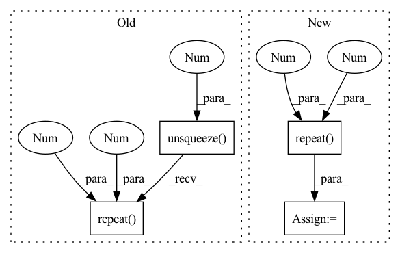

Pattern ID :1377
Before Change
for i in source_ids]
source_alphas = F.softmax(source_alphas)
output_moe = sum([ alpha.unsqueeze(1).repeat(1 , 1 ) *
F.softmax(classifier_outputs[id], dim=1)
for alpha, id in zip(source_alphas, source_ids)])
return output_moeAfter Change
self.domain_encs[i], i).unsqueeze(0)
for i in source_ids]
source_alphas = F.softmax(torch.cat(source_alphas, dim=0), dim=0) // n_source x bs
output_moe = sum([ source_alphas[j].unsqueeze(1).repeat(1 , 1 ) *
classifier_outputs[j] for j in source_ids])
return output_moe
In pattern: SUPERPATTERN
Frequency: 3
Non-data size: 4
Instances Fragment ID: 3972665
Project Name: aamini/chemprop
Commit Name: cf8ea2e781c32716964835d39a9cc4562c75b677
Time: 2018-10-28
Author: yangk@mit.edu
File Name: moe.py
M Class Name: MOE
N Class Name: MOE
M Method Name: forward(2)
N Method Name: forward(2)
M Parent Class: nn.Module
N Parent Class: nn.Module
M File Name: moe.py
N File Name: moe.py
M Start Line: 114
M End Line: 125
N Start Line: 142
N End Line: 151
Before Change
) -> Tuple[FloatTensor, FloatTensor]:
image_count = encoder_state.shape[0] // 2
if prev_tokens.ndim == 1:
prev_tokens = prev_tokens.unsqueeze(0 )
if token_index.ndim == 1:
token_index = token_index.unsqueeze(0).repeat(image_count * 2, 1)
prev_tokens = prev_tokens.T.repeat(2 , 1 )
decoder_state = self.embed_tokens.forward(prev_tokens)
decoder_state += self.embed_positions.forward(token_index)
decoder_state = self.layernorm_embedding.forward(decoder_state)
for i in range(self.layer_count):After Change
) -> Tuple[FloatTensor, FloatTensor]:
image_count = encoder_state.shape[0] // 2
token_index = token_index.unsqueeze(0).repeat(image_count * 2, 1)
prev_tokens = prev_tokens.repeat(2 , 1 )
decoder_state = self.embed_tokens.forward(prev_tokens)
decoder_state += self.embed_positions.forward(token_index)
decoder_state = self.layernorm_embedding.forward(decoder_state)
for i in range(self.layer_count): Fragment ID: 3972682
Project Name: kuprel/min-dalle
Commit Name: 7455465dfe568e4a39f0cd13da60aafd4a5a1905
Time: 2022-08-03
Author: brkuprel@gmail.com
File Name: min_dalle/models/dalle_bart_decoder.py
M Class Name: DalleBartDecoder
N Class Name: DalleBartDecoder
M Method Name: forward(6)
N Method Name: forward(6)
M Parent Class: nn.Module
N Parent Class: nn.Module
M File Name: min_dalle/models/dalle_bart_decoder.py
N File Name: min_dalle/models/dalle_bart_decoder.py
M Start Line: 157
M End Line: 161
N Start Line: 158
N End Line: 159
Before Change
visual_emo_vecs = self.affineVisual(text_emo_vecs)
audio_emo_vecs = self.affineAudio(text_emo_vecs)
text_emo_vecs = text_emo_vecs.unsqueeze(0).repeat( batch_size, 1 , 1 )
visual_emo_vecs = visual_emo_vecs.unsqueeze(0).repeat(batch_size, 1, 1)
audio_emo_vecs = audio_emo_vecs.unsqueeze(0).repeat(batch_size, 1, 1)
text_attn_feature = self.attention(output_text, text_emo_vecs)After Change
output_text, _ = self.RNNs[0](X_text)
output_text = output_text[:, -1, :]
text_emo_vecs_origin = self.textEmoEmbs(torch.LongTensor(list(range(self.num_classes))).to(self.device))
text_emo_vecs = text_emo_vecs_origin.unsqueeze(0).repeat( batch_size, 1 , 1 )
text_attn_weights = self.attention(output_text, text_emo_vecs)
logits = text_attn_weights if logits is None else logits + text_attn_weights
if "a" in self.modalities: Fragment ID: 3972667
Project Name: wenliangdai/modality-transferable-mer
Commit Name: b0e565d11d6b3bf9f65fb1dcbdc8c641a2bc8054
Time: 2020-06-10
Author: wenliang.dai.1995@gmail.com
File Name: src/models/temp.py
M Class Name: EmotionEmbAttnModel
N Class Name: EmotionEmbAttnModel
M Method Name: forward(4)
N Method Name: forward(4)
M Parent Class: nn.Module
N Parent Class: nn.Module
M File Name: src/models/temp.py
N File Name: src/models/temp.py
M Start Line: 53
M End Line: 79
N Start Line: 70
N End Line: 96